Scanner: indgang og check-in
Du scanner gæsternes billetter og armbånd ved gaten. Guiden viser det, du ser på skærmen: grøn luk gæsten ind, orange prøv at scanne igen, rød luk ikke ind (send til Information). Knap-navne og beskeder står som i appen, fx Klar til at scanne.
Kom i gangPar scanneren
Første gang skal enheden pares med en gate. Du får en 9-cifret kode af admin.
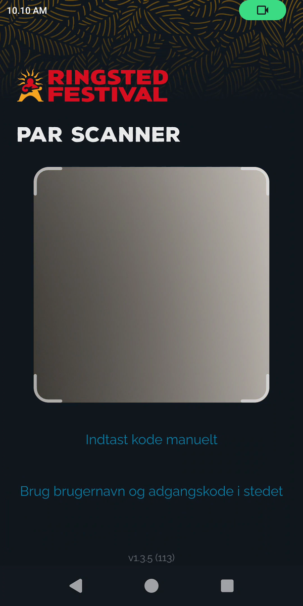
- På Par scanner scanner du admins QR-kode med kameraet, eller trykker Indtast kode manuelt.
- Skriv den 9-cifrede parringskode (og evt. et Enhedsnavn (valgfrit)) og tryk Par enhed. (Alternativt: Brug brugernavn og adgangskode i stedet.)
- Når parringen lykkes, går appen videre af sig selv — log derefter ind.
Kom i gangLog ind
- På Velkommen tilbage skriver du Brugernavn og Adgangskode.
- Tryk Log Ind. (Enheden skal være paret først.)
Kom i gangKlar til at scanne
Forsiden viser hvor du står og hvad du scanner: Event, Lokation (gate og retning), Profil og Adgang. Øverst viser en pille scanretningen (fx Automatisk).
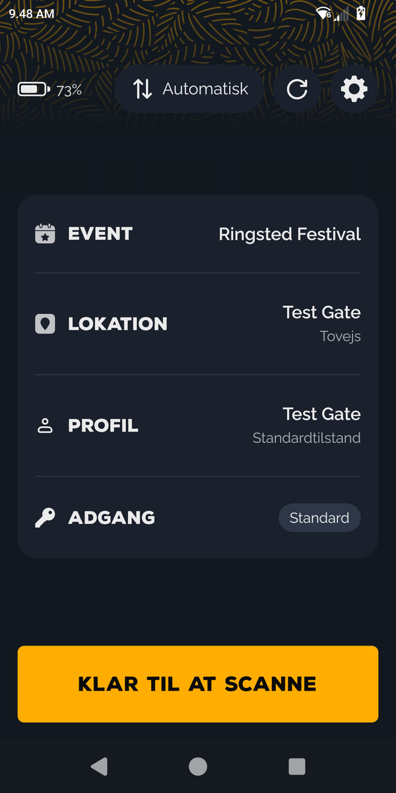
- Tjek at Lokation og retning passer til din gate.
- Tryk Klar til at scanne for at åbne scanneren.
- Har enheden ingen NFC-chip, siger appen det. Du kan stadig scanne QR-koder; armbånd kan så ikke aflæses.
Scan en gæstScan-skærmen
Hold kameraet mod gæstens QR-kode, eller hold et NFC-armbånd tæt på. Under gate-navnet viser et badge hvad du gør: Tjek ind (grøn), Tjek ud (rød) eller Tovejs (grå, begge veje). Er NFC aktiv, står NFC aktiv øverst.
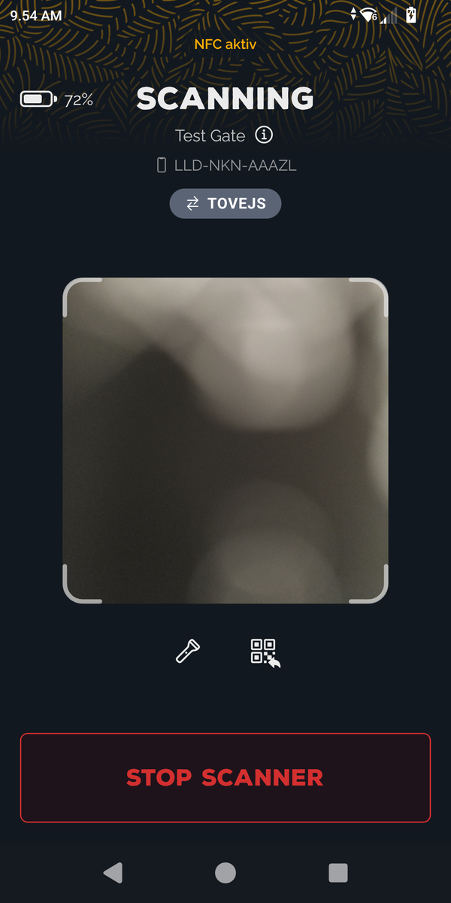
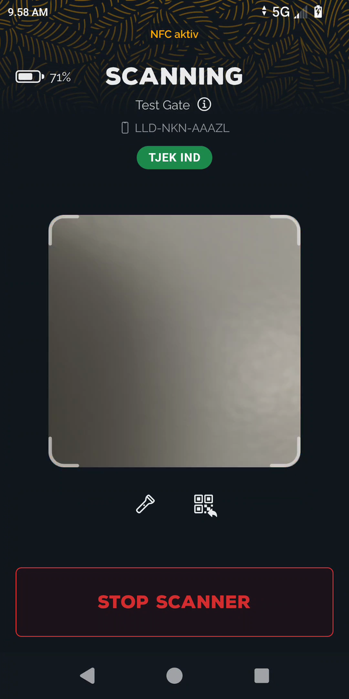
- Ret kameraet mod QR-koden. Scanneren læser den automatisk.
- Tryk på lommelygte-ikonet i mørke, og bed gæsten skrue lysstyrken op og holde telefonen stille.
- Koder kan ikke indtastes manuelt — de skal scannes. Kan QR-koden ikke læses, så tænd lommelygten, rens linsen og prøv igen. Virker det stadig ikke, send gæsten til Informationen.
- QR-ikonet ved siden af lommelygten viser det seneste scanningsresultat igen — brug det hvis du nåede at klikke videre, og skal se hvad der stod.
- Efter et resultat er du klar til næste. Ved grønt går den selv videre efter et par sekunder; ellers tryk Næste billet.
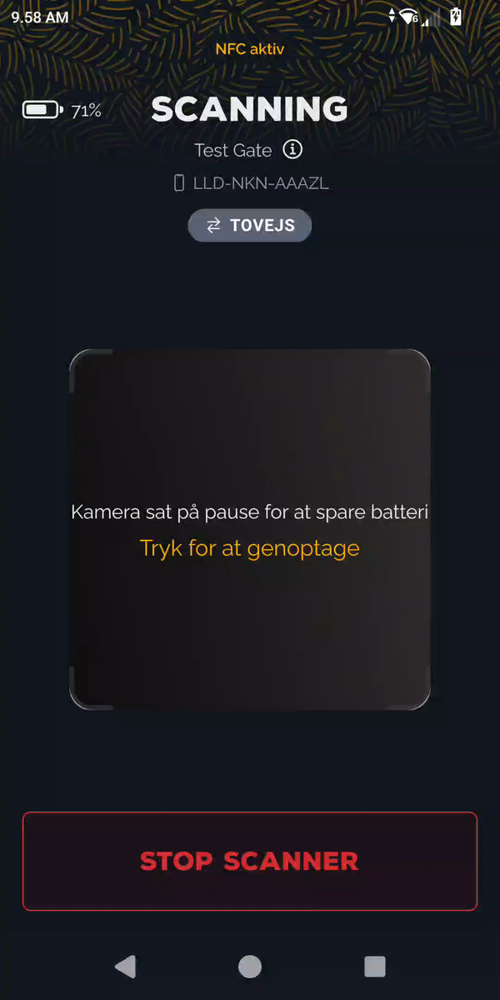
Scan en gæstResultater
Hvert scan giver én af tre farver. Grøn: luk ind. Orange: noget gik galt med selve scanningen — prøv igen. Rød: ingen adgang — send gæsten til Information. Titlen på skærmen fortæller præcis hvad der skete.
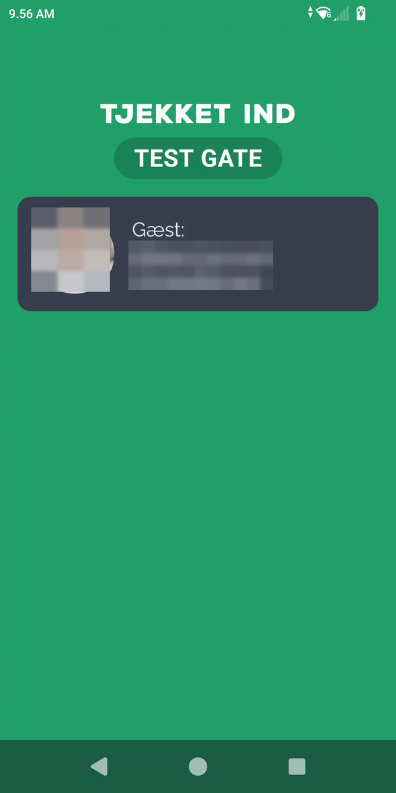
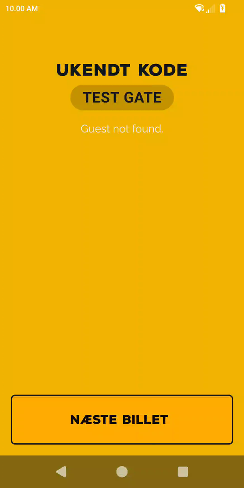
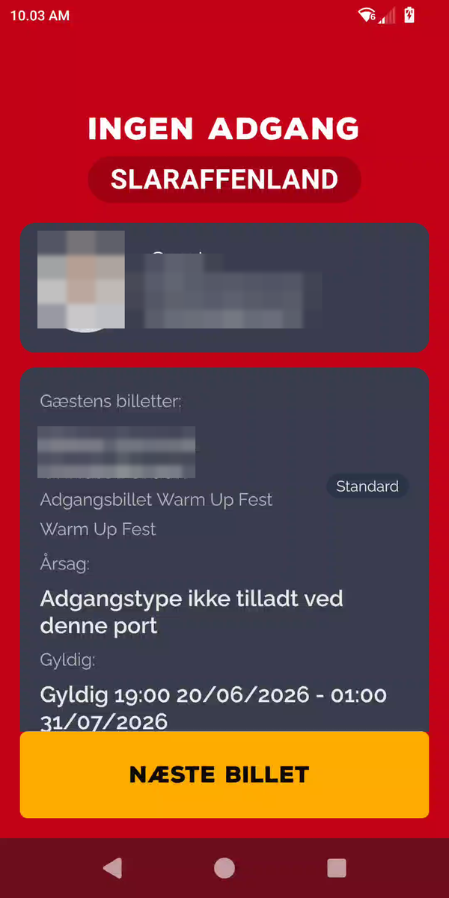
Billetten er gyldig. Skærmen viser handlingen (Tjekket ind ved en indgang, Tjekket ud ved en udgang) med gate og gæst. Går selv videre efter et par sekunder.
Der var et problem med selve scanningen — ikke med billetten. Scan igen: ret QR ind, tænd lommelygten, hold telefonen stille, eller hold armbåndet tættere på. Tryk Næste billet og prøv igen.
Adgangen er afvist. Skærmen viser en Årsag og gæstens billetter. Luk ikke ind — henvis gæsten til supervisor eller Informationen.
Scan en gæstFlere billetter
Har gæsten flere billetter på samme kode, viser appen dem i en liste, så du kan vælge hvilke der skal tjekkes ind.
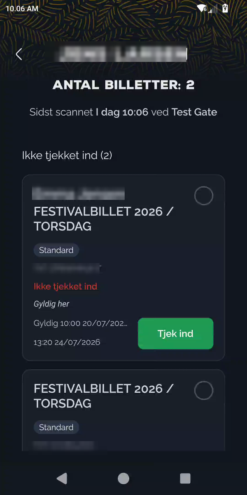
- Listen viser gæstens navn og antal billetter, delt i sektionerne Ikke tjekket ind og Tjekket ind.
- Hver billet viser hvem den gælder, type og status, fx Gyldig her, Allerede brugt eller Gyldig ved en anden indgang.
- Vælg dem der skal ind, og tryk Tjek ind (eller Tjek ud).
Scan en gæstArmbånd (NFC)
Et NFC-armbånd scannes på præcis samme måde som en QR-kode. Hold armbåndet tæt på scanneren i stedet for at rette kameraet mod en QR. Du får det samme farve-resultat som ved QR: grøn luk ind, rød luk ikke ind (læs beskeden). Der er ingen særskilt armbånds-skærm.
- Hold armbåndet tæt på scanneren. Det bruger den samme scan-skærm som QR.
- Læs farve-resultatet og handl på det, præcis som ved en QR-billet.
- Kan båndet ikke aflæses, viser appen orange NFC-tag kunne ikke læses. Prøv igen, eller scan gæstens QR-kode i stedet.
- Har enheden ingen NFC-chip, kan armbånd ikke aflæses. Brug QR-koden.
Godt at videTjek ind og tjek ud
- Fast gate: Er gaten sat til kun indgang eller kun udgang, scanner du altid samme vej. Der er ingen knap at skifte.
- Tovejs-gate: Badgeet viser Tovejs, og appen vælger selv ind eller ud (Automatisk) ud fra gæstens status. Du kan tvinge Check ind eller Check ud fra forsiden.
Godt at videKræver forbindelse
Godt at videKonto, indstillinger og frakobl
Åbn Konto for at se enhedens opsætning og komme til indstillinger.
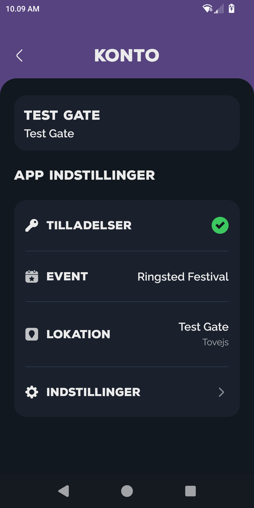
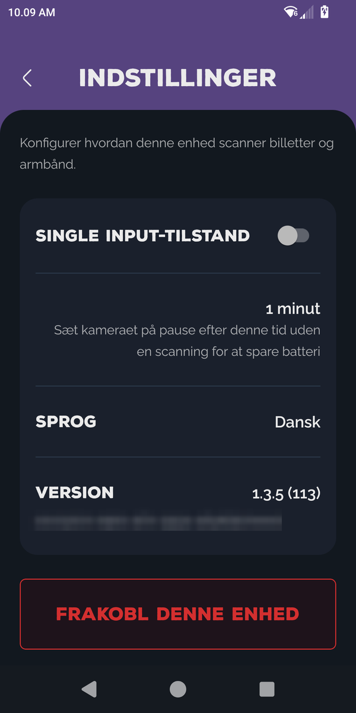
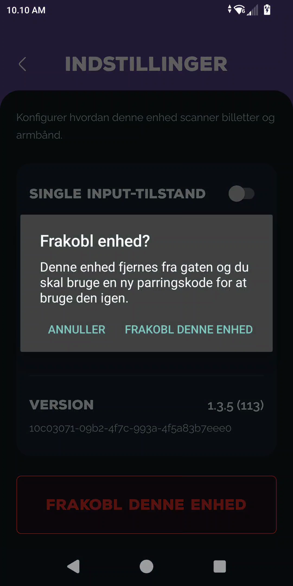
- Under Konto ser du Tilladelser, Event, Lokation og Indstillinger.
- Indstillinger rummer bl.a. Single input-tilstand, Kamera-timeout (pause for at spare batteri), Sprog og Version.
- Skal enheden flyttes til en anden gate/festival: Frakobl denne enhed. Bekræft i dialogen — så skal den pares på ny med en frisk kode.
OpslagHurtig-oversigt
| Du ser | Farve | Gør sådan |
|---|---|---|
| Tjekket ind / Tjekket ud · Gyldig genscanning | Grøn | Luk gæsten ind (eller tjekket ud). |
| Ukendt kode · Scanning mislykkedes · NFC-tag kunne ikke læses · Ingen forbindelse | Orange | Prøv at scanne igen. Ret QR/lys, prøv armbåndet igen. |
| Ingen adgang · Billet er til en anden gate · Adgangstype ikke tilladt · Allerede tjekket ind · Eventet er ikke i gang · Ingen gyldige billetter | Rød | Luk ikke ind. Se Årsag, send til Information. |
| Flere billetter | Liste | Vælg billetterne og tjek ind. |
| Armbånd (NFC) | Som QR | Samme grøn/orange/rød resultat som en QR-scanning. |
| Intet resultat / scanning afbrudt | Net | Ingen forbindelse. Vent og scan igen. |